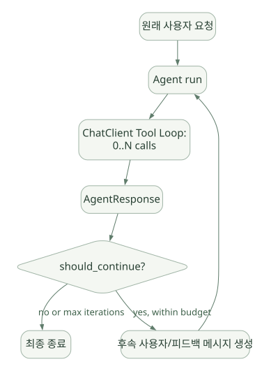
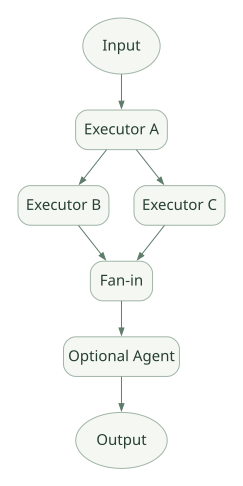

SECOND STUDY / Harness와 명시적 Workflow
Harness와 명시적 Workflow
이번 단원의 읽는 관점
전체 Agent 재실행과 Tool Loop를 나누고 Executor·Edge·Superstep commit을 읽습니다.
살펴볼 경계내부 상태 commit과 외부 DB·API 효과의 원자성은 다른 경계입니다.
이 페이지의 세부 목차
Part III. Harness와 명시적 Workflow 엔진
15. Harness의 별도 Agent Loop: 왜 Tool Loop와 구분해야 하나?#
15.1 AgentLoopMiddleware의 기능#
_harness/_loop.py에는 AgentLoopMiddleware(AgentMiddleware)가 있고, 설명상 특정 조건이 만족될 때까지 감싼 Agent를 다시 실행한다. 이때 반복 한 번은 모델 한 턴이 아니라 Agent 실행 한 회라는 점이 중요하다. [S07]
가로로 이동해서 읽을 수 있습니다. 도식 크게 보기 ↗

원문의 학습용 도식입니다. 연결 방향·분기 조건·점선·쌍방향 연결을 보존해 세로로 배치했습니다. 실제 구현·의사코드·해석의 구분은 본문을 함께 읽으세요.
도식 원문 보기 (Mermaid)
flowchart TD
U[원래 사용자 요청] --> A[Agent run]
A --> INNER[ChatClient Tool Loop: 0..N calls]
INNER --> ANS[AgentResponse]
ANS --> CR{should_continue?}
CR -->|yes, within budget| NEXT[후속 사용자/피드백 메시지 생성]
NEXT --> A
CR -->|no or max iterations| END[최종 종료]AgentLoopMiddleware는 상위 요청에 대한 진행 상황을 되돌아보고 추가 작업이 필요한지 평가하는 정책을 구현하기에 좋다. 하나의 모델 응답이 Tool 호출을 끝냈더라도 작업이 완료된 것은 아닐 수 있기 때문이다. 반대로 쉽게 무한 반복에 빠질 수 있어 max_iterations와 다음 지시문 구성 방식이 중요하다. [S07]
15.2 코드에서 확인한 종료 조건#
고정 소스의 _evaluate_stop()은 max_iterations 안전 제한을 먼저 확인하고, 그렇지 않으면 should_continue를 평가한다. should_continue는 단순 bool 또는 (bool, feedback) 형태의 값을 반환할 수 있고, 후자는 다음 반복을 안내하는 메시지에 활용된다. [S07]
[PSEUDO] 핵심 분기만 요약:
async def decide_stop(iterations, max_iterations, should_continue):
if max_iterations is not None and iterations >= max_iterations:
return True, None
keep_going, feedback = normalize(await should_continue())
return not keep_going, feedback이 코드는 설명용 재구성이다. normalize은 이 문서에서 만든 이름이고 실제 소스의 전부를 복사한 것이 아니다.
15.3 추가로 분해할 질문#
should_continue를 잘못 구현해 계속 True만 반환하면 어떤 budget이 종료를 강제하는가?- 평가자가 LLM인 경우 평가 모델 호출 비용은 Agent 모델 호출 비용과 어떻게 분리되는가?
- 평가자의 피드백은 User/System/Tool 메시지 중 어떤 역할로 주입되며 다음 반복에서 어떻게 보이는가?
- 한 반복의 완료를 Session에 언제 기록하는가? 마지막 응답과 히스토리 저장이 충돌하지 않는가?
- Streaming 반복을 소비하지 않고 종료하면 내·외부 Cleanup이 수행되는가?
15.4 두 Loop의 조합 비용#
상위 Harness가 최대 5회 Agent를 다시 호출하고, 각 Agent Run의 Tool 자동 호출이 최대 10회를 허용한다고 가정하면 단순히 ‘5회 제한’이라고 설명할 수 없다. 실제 모델·도구 호출 수는 중첩 루프 예산과 재시도·실패·평가 호출에 좌우된다. 따라서 새 Framework를 설계할 때는 모델 호출, Tool 실행, 토큰, 경과 시간, 상위 반복 횟수를 따로 계측해야 한다. [INF]
16. Harness의 기본/옵션 기능과 확장 컴포넌트#
Microsoft 공식 문서의 Harness는 기존 Agent를 더 많은 Provider와 Middleware로 조합하는 구성 팩토리에 가깝다. Python에서 create_harness_agent(...)가 그 대표 진입점이다. [D02]
| 기능 | Python Harness의 성격 | 직접 비교할 설계 문제 |
|---|---|---|
| Function Invocation | 기본 Tool 자동 실행 및 제한 | Tool 요청→실행 정책이 어디에 있나? |
| Per-service-call history | 모델 호출 단위 저장 | 중간 실패 후 어디까지 재개 가능한가? |
| Planning/Todo, Mode | 기본 제공 계획·실행 구조 | 계획은 실행과 얼마나 결합되는가? |
| File Memory | 기본 Session 기억 형태 | 저장 scope를 어떻게 분리하나? |
| Tool Approval | Standing Rule/자동 승인 Middleware | 허용 정책이 세션에 남는 위험은? |
| Compaction | 설정·토큰 한도에 따라 활성화 | 어떤 메시지가 삭제/요약되는가? |
| Skills | Python에서 Provider/경로로 설정 | 자동 로딩과 실행 승인 차이는? |
| Background Agents | 선택 구성 | 위임한 작업의 세션/리소스 소유권은? |
| Shell/File Access | 추가 패키지·명시 구성 | 샌드박스가 어디에서 강제되는가? |
| AgentLoopMiddleware | 선택적 상위 반복 | 어떤 완료 조건에서 재실행하는가? |
‘Harness면 전부 자동 사용된다’는 설명은 부정확하다. 특히 Skills, Shell, File Access, Background Agents, 외부 저장소 연결은 옵션·자원·권한 구성에 따라 제공 범위가 달라진다. [D02]
16.1 Skills는 MCP와 다르다#
Skills는 어떤 절차로 작업을 수행할지를 문서·스크립트·리소스로 묶어 점진적으로 로딩하는 패턴이다. MCP는 외부 Tool/Resource/Prompt를 통일된 인터페이스로 연결하는 프로토콜이다. Tool 실행기와 Skills 파일은 대체 관계가 아니며, Skill이 MCP Tool을 사용하도록 설계할 수도 있다. [D11][D12]
16.2 Skills 로딩과 보안#
SkillsProvider는 Skill을 찾아 필요한 정보를 로딩하고, 부가 리소스·스크립트 실행에 관한 Tool을 제공할 수 있다. 공식 문서에서는 읽기 전용 load_skill, read_skill_resource와 실행 위험이 있는 run_skill_script를 구분해 승인 규칙을 조합하는 예를 제공한다. [D11]
학습할 때는 “Skill이 호출됐다”를 다음 네 단계로 나눠야 한다.
- Skill 발견: 메타데이터·설명만 모델에 노출하는가?
- Skill 로딩: 전체 지침/파일은 어떤 Tool로 불러오는가?
- Skill 실행: 단순 instruction인지 script/tool 실행인지?
- Skill 해제/압축: 필요 없어진 파일·도구 결과가 Context에 얼마나 남는가?
v1.24.0 릴리스에는 Agent-triggered in-run compaction 및 Skill Unload 전략이 실험적 기능으로 추가됐다. 이는 단순히 “메모리를 요약한다”와 달리 현재 로딩된 Skill 관련 메시지 묶음을 Context에서 정리할 수 있는 메커니즘을 연구할 수 있다는 뜻이다. [R01][S06]
17. Graph Workflow: Agent Loop가 아닌 결정적 실행 그래프#
Workflow는 다음의 구성요소를 가진다.
- Executor: 입력 메시지를 받아 처리하고 결과를 생성하는 노드.
- Edge: Executor 간 메시지 전달·조건 분기·fan-out/fan-in을 정의한다.
- WorkflowBuilder: 그래프·타입·시작 노드·경로를 구성한다.
- Workflow: 실행 요청, 상태·이벤트·재개를 노출하는 외부 인터페이스.
- Runner: Graph의 실행 가능한 단위를 스케줄하고 상태를 commit한다. [D08][S08][S09]
가로로 이동해서 읽을 수 있습니다. 도식 크게 보기 ↗

원문의 학습용 도식입니다. 연결 방향·분기 조건·점선·쌍방향 연결을 보존해 세로로 배치했습니다. 실제 구현·의사코드·해석의 구분은 본문을 함께 읽으세요.
도식 원문 보기 (Mermaid)
flowchart LR
START([Input]) --> LOAD[Executor A]
LOAD --> VALID[Executor B]
LOAD --> META[Executor C]
VALID --> JOIN[Fan-in]
META --> JOIN
JOIN --> REVIEW[Optional Agent]
REVIEW --> END([Output])이 그래프는 Workflow 원리 설명용으로 실제 시스템의 특정 그래프를 그대로 복제한 것은 아니다. Executor 내부에 모델 호출이 없는 단순 함수만 둘 수도 있고, Agent를 Executor로 둘 수도 있다.
17.1 모델이 경로를 결정하는가?#
일반 Agent Loop에서는 LLM이 도구 사용 여부를 판단할 수 있다. Graph Workflow에서는 개발자가 실행 경로·트리거·조건을 코드로 정의한다. 조건이 LLM 결과를 참조할 수는 있지만, 프레임워크는 경로와 실행 상태를 명시적으로 관리한다. [D08]
17.2 왜 Workflow가 필요한가?#
- 감사 로그에 ‘어떤 단계가 완료됐는지’를 명확히 남길 수 있다.
- 실패한 지점에서 재시도/수동 보완/승인 등의 경계가 생긴다.
- 타입과 메시지 라우팅 계약이 정해져 예측 가능한 실행 경로를 만들 수 있다.
- 병렬 단계에서 필요한 데이터가 모두 준비된 후 다음 단계로 진입하게 구성할 수 있다.
단점은 그래프가 복잡할수록 Executor/Edge/합류 조건/State 저장소 설계가 늘어나며, 작업 경로 자체를 모델의 열린 탐색에 맡기는 문제에는 덜 간결할 수 있다는 점이다. [INF]